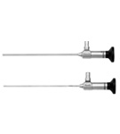

超氧关节镜技术是将超氧（臭氧）技术的优势有机地与传统关节镜技术进行了创新整合，让整个微创手术在超氧（臭氧）水灌注下进行操作，有效的消除了关节腔无菌性炎症的同时还杜绝了术后术肿、感染、粘连等并发症；利用低温等离子代替传统的机械刨削系统有效的预防了术后血肿；术后的超氧（臭氧）加压膨胀疗法；有效改善关节间隙的狭窄，并能改善局部的缺血、缺氧状态。
超氧关节镜的作用：
1、诊断作用
首先，关节镜可用于检查关节腔内各种病变，对关节内各种组织结构的状况进行详细评估及记录，某些关节病变，如色素绒毛结节性滑膜炎具有特征性关节镜表现，几乎可以得出诊断。同时，还可获取关节液或病变组织，在关节镜监视下进行活检取病理组织，进一步行实验室检查和病理检查。 但是近年来各种无创性检查不断发展，尤其是B超、CT和MRI等影像学检查的发展，临床上单纯以诊断为目的的关节镜已越来越少运用。但是关节镜可对病灶进行直视下观察和探查，并具有一定的放大作用，还可行动态观察，具有不可替代的优点，因此对于经过临床体检及各种辅助检查，长期不能明确病因的患者仍有应用价值。
2、治疗作用
除了对多种运动损伤具有治疗作用之外，关节镜技术在关节炎外科治疗中也可大显身手，发挥重要的作用。据文献报道关节镜技术可运用于骨性关节炎、炎症性关节、色素沉着绒毛结节性滑膜炎、晶体性关节病、感染性关节炎和创伤性关节炎等多种关节炎的诊断和治疗。例如对于多种类型的滑膜炎可在关节镜下施行滑膜切除术，在膝关节可以通过后方入路，切除后方关节囊内的滑膜组织，达到全关节囊滑膜切除的目的。对于骨性关节可行关节清理术，去除游离体，切除撕裂的半月板，修整软骨面等。
关节镜治疗优势 :
1、 切口美观，可避免晚期因关节表面和运动部位的瘢痕而引起的刺激症状；
2、 属于微创手术，痛苦小，术后反应较小，患者易于接受；
3、 术后早期即可活动和使用肢体，避免长期卧床并发症，减少护理人员和费用；
4、 并发症相对较少；
5、 基本不影响关节周围肌肉结构，术后可早期进行功能锻炼，防止关节长期固定引起的废用和并发症；
6、 可以在近乎生理环境下对关节内病变进行观察和检查，有“把眼睛和手指放入关节内”之称，可对关节进行动力性检查，提高了诊断能力，某些疾病如滑膜皱襞综合征，是通过关节镜才确立的；
7、 关节镜可施行以往开放性手术难以完成的手术，如半月板部分切除术等。